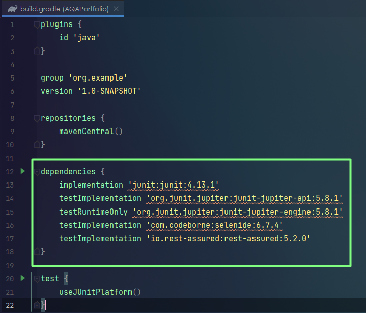
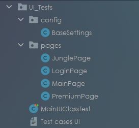
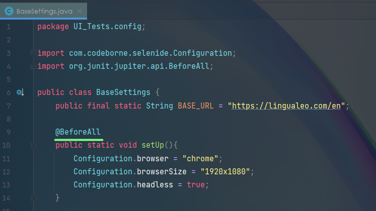
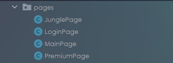
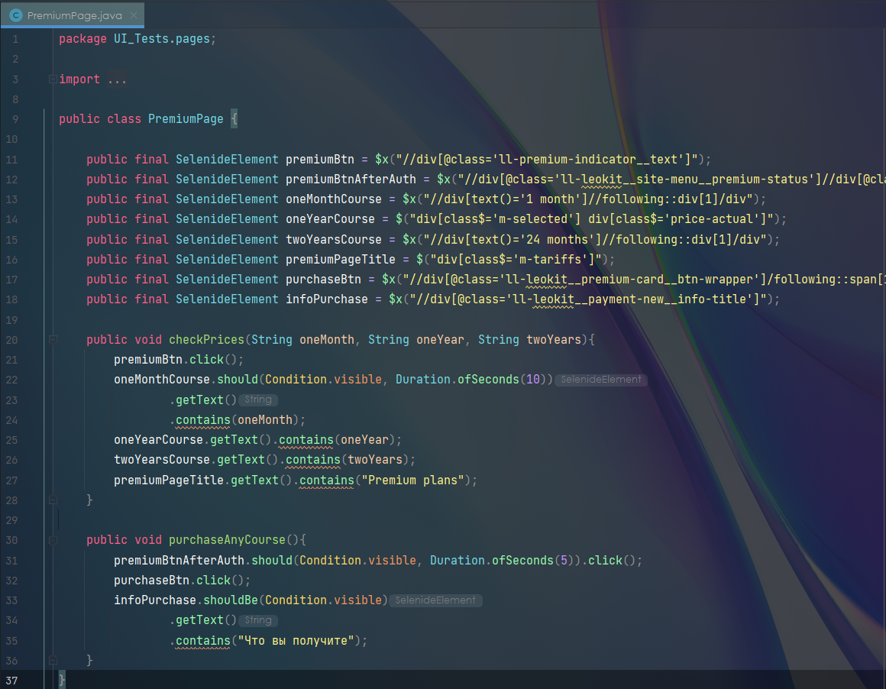
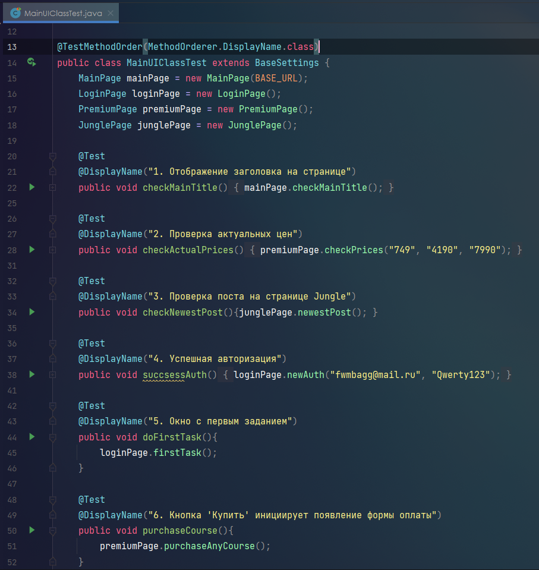
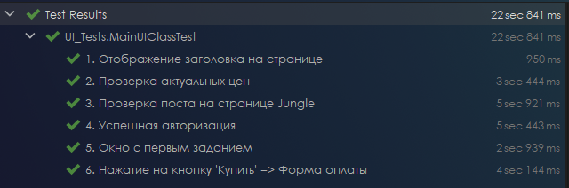

UI Autotests 🏞️ - Selenide, JUnit5
📃 Чек-лист для UI проверок следующий:
1. Наличие заголовка на главной странице;2. Соответствие цен на странице с курсами;
3. Нажатие на кнопку "Купить" инициирует появление окна с формой оплаты;
4. Авторизация;
5. Открыть последний пост на странице "Джунгли";
6. Приступить к выполнению первого задания.
🔗 Gradle build:
Подключаю к проекту JUnit и Selenide, в test добавляю JUnitPlatform.

🗺️ Структура проекта:
При проектировании тестов, используя модель PageObject, классы проекта были разделены и распределены по соответстующим пакетам:

1. Пакет "config" - настройки Selenide (обязательно с использованием аннотации @BeforeAll, которые описывают BaseUrl, используемый браузер, размерность открываемого окна и видимость (браузер может запускаться в фоновом режиме).

2. Пакет "pages" - используемые в тестировании страницы сайта, в page-классах описаны локаторы и методы, то есть всё необходимое для проектирования тестов.


👇🏼 Вне пакетов имеется главный тестовый класс, в котором реализованы все проверки с использованием созданных экземпляров page-классов и описанной в них логики.

✅ Результаты проверок:

➡️ Ссылка на проект - UI Autotests GitHub